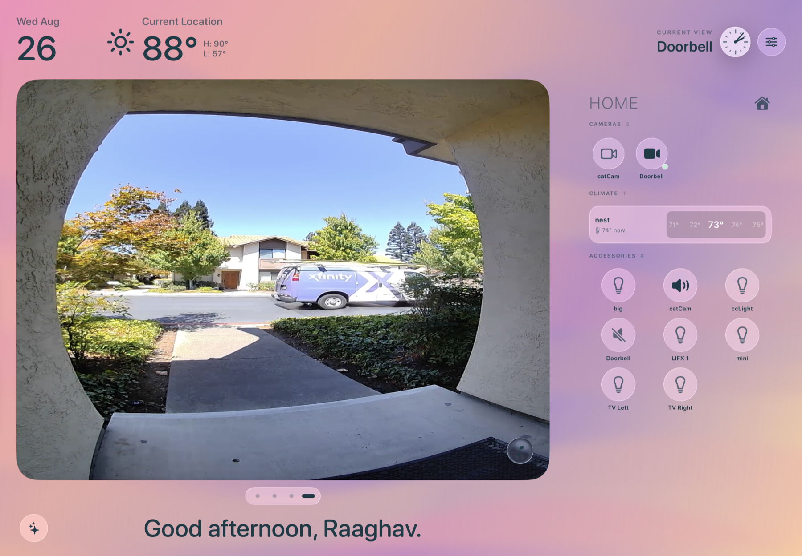
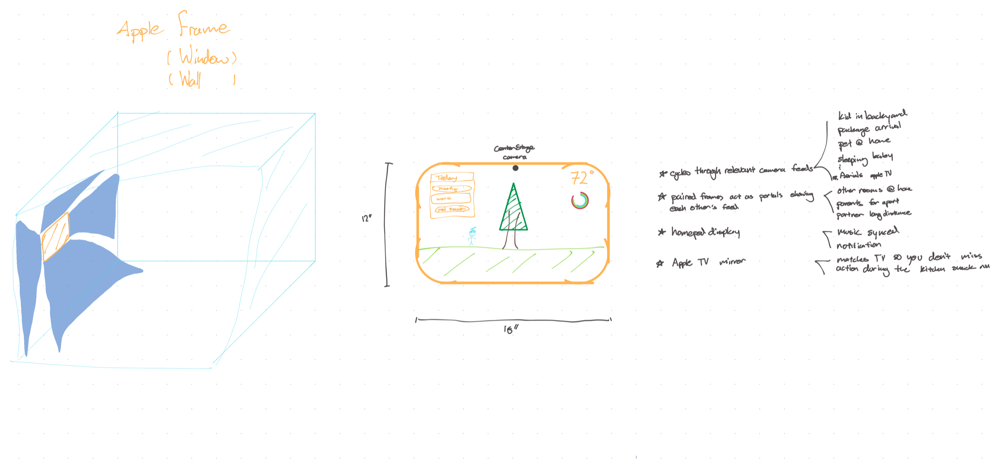
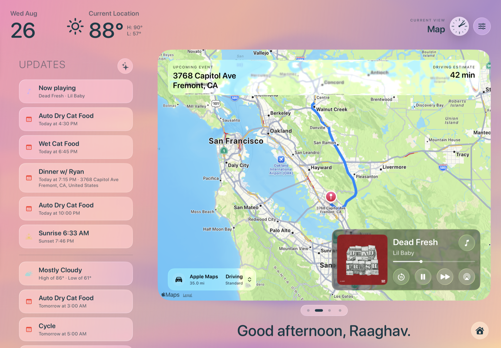
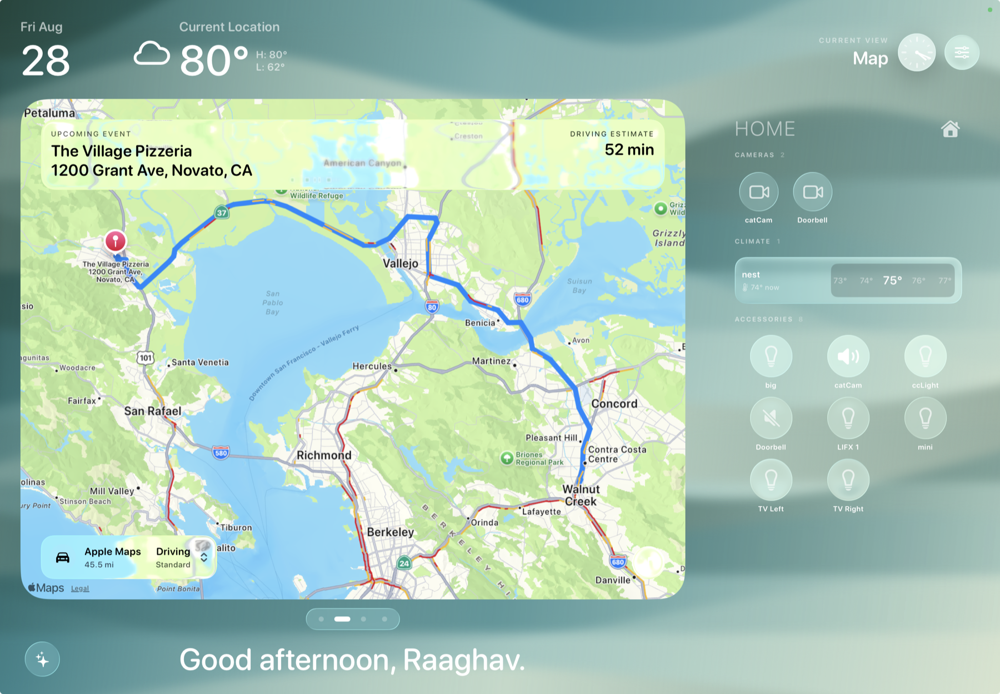
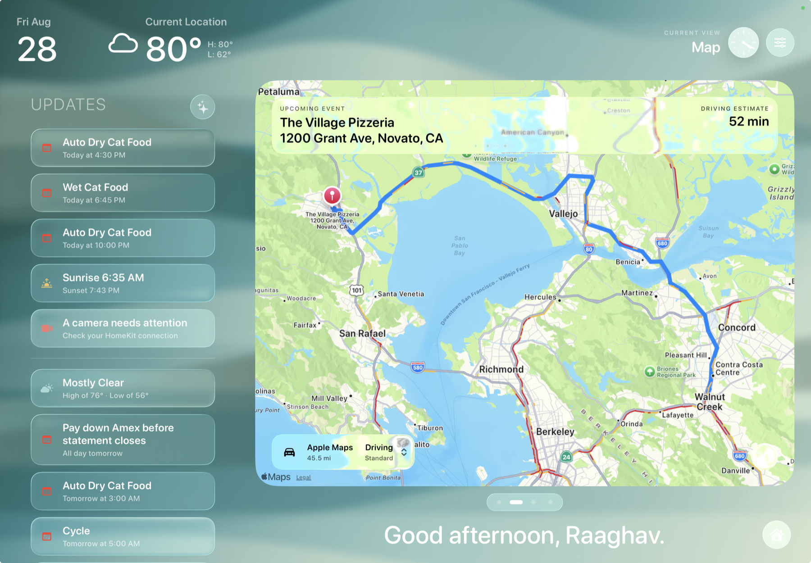
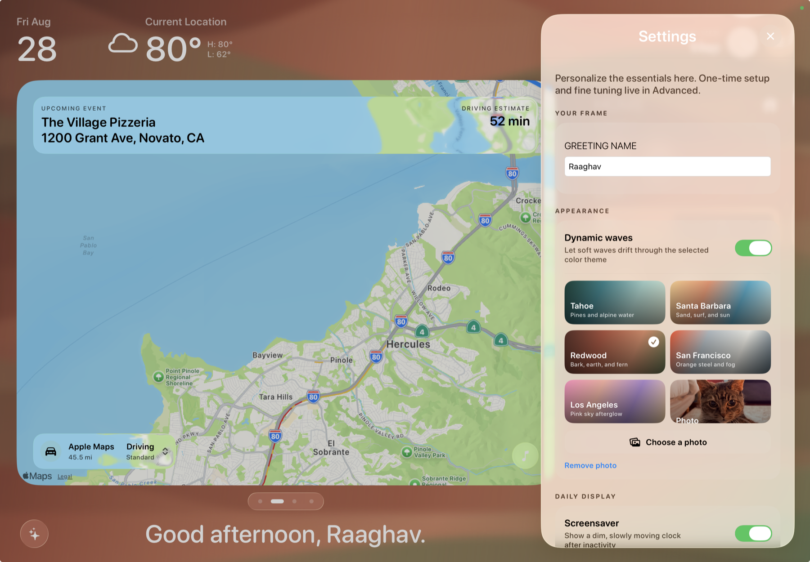
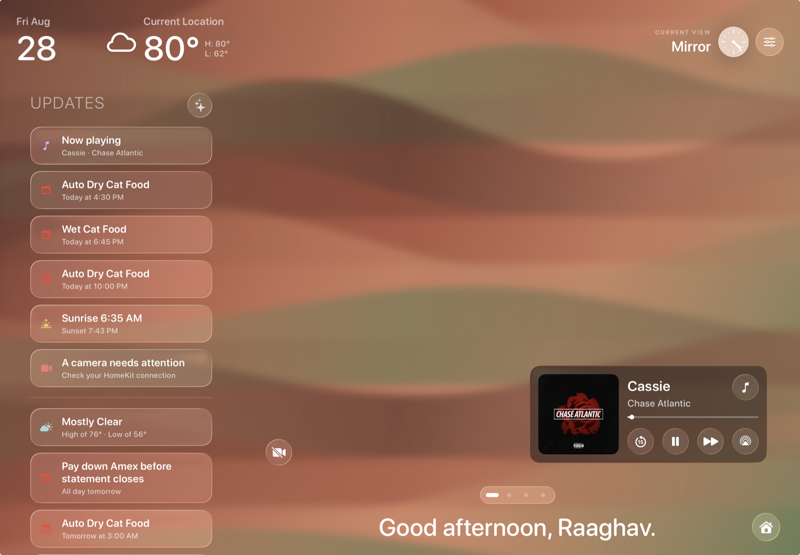
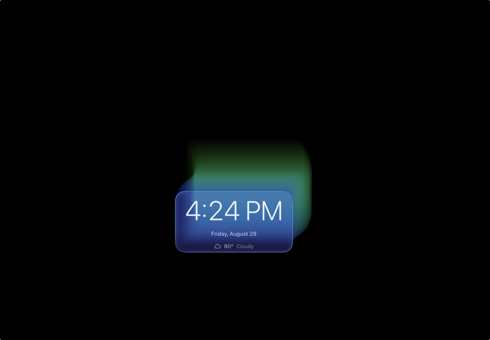

Ambient first
Time, greeting, weather, and the next relevant change are available at a glance, without turning the iPad into another inbox.
Native iPadOS product · Functional prototype
Frame turns an unused iPad into a calm, persistent view of what matters right now: the time, the weather, the next event, and one view into home.

The premise
Most dashboards ask you to manage a collection of widgets. Frame asks a quieter question: what would be useful to notice from across the room?
Time, greeting, weather, and the next relevant change are available at a glance, without turning the iPad into another inbox.
The camera or Mirror canvas gets the largest surface. Supporting information stays quiet until it earns a tap.
Permission denied, offline, empty, and unavailable are designed states. The interface says what happened and keeps the rest of the day visible.

From sketch to surface
The original idea began with a wall: if an iPad is already present, it can mediate between the room and the person without asking for the ritual of picking up a phone.
The sketch became a real SwiftUI prototype with an ambient header, prioritized Updates, a swipeable feed carousel, and a settings surface for the choices that should stay persistent.
Open the concept sketch PDFThe product surface
Frame is intentionally progressive: the default dashboard is glanceable, while a tap opens the detail needed for calendars, home controls, music, or settings.



Current evidence: the lead captures above show real HomeKit and map/Updates examples. The supporting captures are deterministic demo states; camera, Photos, permissions, rotation, and prolonged-display behavior still need physical-iPad verification.



Four rules for an always-on screen
Frame is not trying to win a notification arms race. It is a small piece of household infrastructure that should make the next useful action easier to see.
Readable from several feet away in a few seconds.
One focused feed, with snapshots and pagination instead of a video wall.
Access boundaries and unavailable states are part of the design.
Keep the ambient layer simple; put detail one tap away.
Built as a product, not a rendering
Frame’s external services sit behind protocols, so the same surface can be demonstrated with deterministic mock data and connected to real Apple capabilities without rewriting the interaction model.
One main-actor dashboard model coordinates the selected feed, the ambient mode, the Updates summary, and each integration’s loading, denied, empty, stale, offline, and failed states.
That architecture matters because a persistent display cannot disappear every time one service is unavailable. The last useful state stays visible while the app explains what is restoring.
The quiet part is a boundary
The Mirror feed is local AVFoundation capture. The prototype does not record, upload, analyze, or persist camera frames. Updates are limited to approved sources such as Calendar, Weather, HomeKit, Health, Music, and Frame-owned state.
Current status